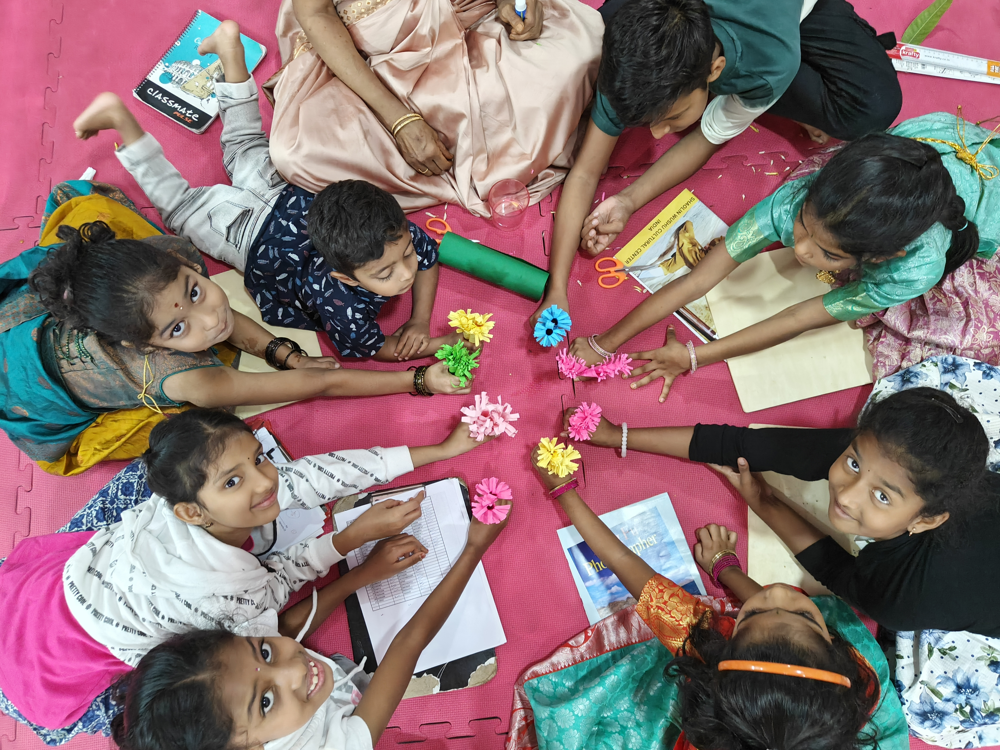
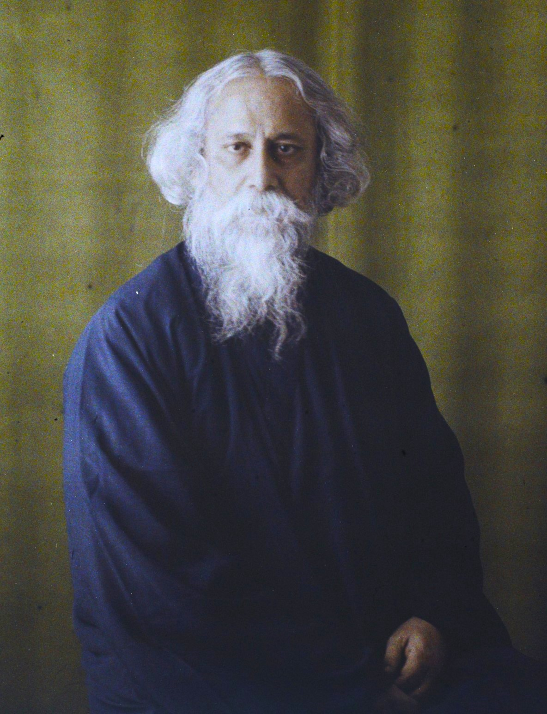

Nature. Play. Tradition.
Reimagined for today's children.

We create research-informed, nature-driven learning experiences that strengthen the foundation of childhood. Our programs are intentionally designed to build emotional resilience, creativity, sensory awareness, and social confidence through meaningful hands-on exploration. By blending nature, culture, and experiential learning, we offer children high-quality developmental experiences that enrich classroom learning.
At Back to Roots, we strive to rekindle the essence of childhood by creating meaningful, hands-on experiences that nurture a child's curiosity, imagination, and connection with nature and culture. Through thoughtful play and creative exploration, we inspire a slower, more mindful way of growing and learning — filled with real moments, simple joy, and lasting memories.
Growing up in Rameswaram, young Kalam loved watching birds and flying kites. He tinkered with toy boats and model planes, inspired by the sea and sky. That playful curiosity later defined his career as India's "Missile Man" and visionary President.
Walt Disney grew up on a farm in Missouri, surrounded by animals and nature. As a child, he would spend hours sketching the creatures around him and entertaining his siblings with homemade drawings. His love for storytelling and fascination with animals planted the seed of thought for why not the characters in drawing move which resulted in the idea of Animation.

As a child in Bengal, Tagore spent hours gazing at trees, birds, and the changing sky. His family's garden became his first classroom — a place where imagination met observation. The rhythm of nature later echoed in his poems and the school he founded, Shantiniketan, where children learned under open skies.

In Mysore, a little boy drew on walls, doors, and old notebooks — sketching faces he saw around town. His childhood doodles became his lifelong language. Laxman's sharp eye for human quirks led to the creation of India's most beloved observer — The Common Man.
As a young boy in Arizona, Steven Spielberg was always curious about how stories could come alive. Using his father's 8mm camera, he filmed toy trains crashing, friends acting in adventure scenes & clay models. His backyard became his first film studio, where play met purpose. Those childhood experiments shaped him into one of the world's greatest storytellers — bringing wonder, fear, and imagination to screens everywhere.
🌿 Every great story begins with a seed — a moment of play, a connection with nature, a spark of curiosity. Back to Roots celebrates those beginnings, reminding us that the truest growth happens when we nurture what once made us wonder.
Choose from our range of engaging programs designed to suit different age groups and interests.
Our Malgudi moments where every frame holds a story of simple joys, curious hands and wonder in eyes.
The sweetest melodies are the voices of families who have rediscovered the joy of simple moments and meaningful connections.
In a world full of screens, Back to Roots gave my daughter the joy of slowing down. She came home with muddy hands, sparking eyes and stories about composting and crows. I could not have asked for a better Sunday!
Back to Roots farm visit was a revelation! Shriya came back with a newfound respect for nature and stories about how our ancestors lived in harmony with the earth. It was like watching her connect the dots of her own heritage.
My son has not stopped talking about 'Ajji's courtyard'! From playing lagori to planting saplings, every moment was pure childhood. This is what real learning feels like alive, messy and full of wonder.
Back to Roots didnt just engage my child it touched our whole family. Varuni showed the flower garland she made to her Grany and told about Panchatantra story at dinner, and we ended up sharing our own childhood memories. Its not just workshop, its a bridge across generations
At Back to Roots, you are not just booking a program you are joining a community of families who believe in simple joys, shared stories, and the magic of children growing up close to nature.
We can not wait to welcome you home.